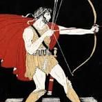

1 Procédé habile, mais déloyal, dont quelqu'un se sert pour obtenir
ou réaliser ce qu'il désire : Déjouer les ruses d'un adversaire.
2 La capacité de quelqu'un à agir de façon trompeuse,
déloyale, pour parvenir à ses fins : Un visage qui dénote la ruse.
Dans la Mythologie ou L'Antiquité,on peut relever plusieurs histoires où la ruse est au premier plan.
Je vais vous donner quelques Exemples Historiques :
La Mythologie Grec: Ulysse

Le Cheval de Troie
À l'initiative d'Ulysse, des guerriers grecs réussissent à pénétrer dans Troie,
assiégée en vain depuis dix ans, en se cachant dans un grand cheval de bois, recouvère d'or, il offert
aux Troyens. Cette ruse de guerre entraîne la chute de la ville et permet le dénouement de la guerre.